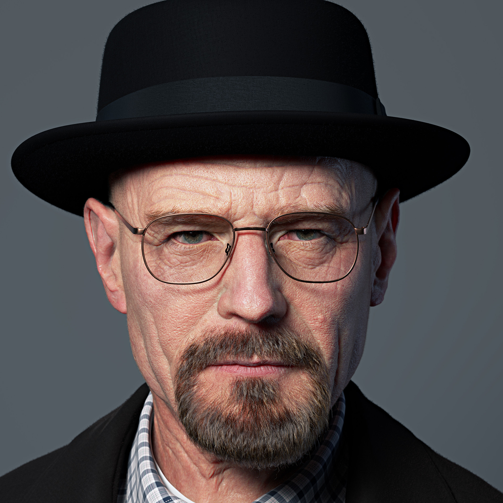

Breaking Bad history
Breaking Bad is an American neo-Western crime drama television series created and produced by Vince Gilligan. Set and filmed in Albuquerque, New Mexico, it tells the story of Walter White (Bryan Cranston), an underpaid, overqualified, and dispirited high-school chemistry teacher who is struggling with a recent diagnosis of stage-three lung cancer, turning to a life of crime and partnering with his former student Jesse Pinkman (Aaron Paul) to produce and distribute crystal meth to secure his family's financial future before he dies, while navigating the dangers of the criminal underworld. The show aired on AMC from January 20, 2008, to September 29, 2013, consisting of five seasons for a total of 62 episodes. Among the show's co-stars are Anna Gunn and RJ Mitte as Walter's wife Skyler and son Walter Jr., and Betsy Brandt and Dean Norris as Skyler's sister Marie Schrader and her husband Hank, a DEA agent. Others include Bob Odenkirk as Walter's and Jesse's sleazy lawyer Saul Goodman, Jonathan Banks as private investigator and fixer Mike Ehrmantraut, and Giancarlo Esposito as drug kingpin Gus Fring. The final season introduces Jesse Plemons as the criminally ambitious Todd Alquist, and Laura Fraser as Lydia Rodarte-Quayle, a cunning business executive secretly managing Walter's global meth sales for her company.... Breaking Bad's first season received generally positive reviews, while the rest of its run received unanimous critical acclaim. Since its conclusion, the show has been lauded by critics as one of the greatest television series of all time.[9] It had fair viewership in its first three seasons, but the fourth and fifth seasons saw a moderate rise in viewership when it was made available on Netflix just before the fourth season premiere. Viewership increased more drastically upon the premiere of the second half of the fifth season in 2013. By the time that the series finale aired, it was among the most-watched cable shows on American television. The show received numerous awards, including 16 Primetime Emmy Awards, eight Satellite Awards, two Golden Globe Awards, two Peabody Awards, two Critics' Choice Awards, and four Television Critics Association Awards. Cranston won the Primetime Emmy Award for Outstanding Lead Actor in a Drama Series four times, while Aaron Paul won the Primetime Emmy Award for Outstanding Supporting Actor in a Drama Series three times; Anna Gunn won the Primetime Emmy Award for Outstanding Supporting Actress in a Drama Series twice. In 2013, Breaking Bad entered the Guinness World Records as the most critically acclaimed TV show of all time.[10] A sequel film, El Camino: A Breaking Bad Movie, starring Paul was released on Netflix and in theaters on October 11, 2019.[11] Better Call Saul, a prequel series featuring Odenkirk, Banks, and Esposito reprising their Breaking Bad roles, as well as many others in guest and recurring appearances, debuted on AMC on February 8, 2015, and is currently airing its sixth and final season.
Characters
Walter White - Heisenber
Walter Hartwell "Walt" White Sr., also known by his clandestine pseudonym and business moniker/alias Heisenberg, is a chemist and drug kingpin from Albuquerque, New Mexico. Walt is a former underachieving high school chemistry teacher at J. P. Wynne High School who, after being diagnosed with terminal lung cancer, started manufacturing chemically pure crystal methamphetamine to provide for his family (his wife Skyler, son Walt Jr., and infant daughter Holly) upon his death. Knowing nothing about the drug trade, Walt enlists the aid of his former student, Jesse Pinkman, to sell the meth he produces.
Jesse Pinkman

Jesse Bruce Pinkman is a citizen of Alaska and a retired career criminal, best known as the business and meth cook partner of his former chemistry teacher Walter White in the Albuquerque methamphetamine drug trade as a manufacturer and distributor. Prior to working with Walt, Jesse worked as a small-time methamphetamine user, manufacturer, and dealer.
Gustavo Fring

Gustavo "Gus" Fring, also referred to as the Chicken Man and the Chilean, is a Chilean-American restaurant entrepreneur that uses his stores as a front for the drug trade. He is the proprietor of Los Pollos Hermanos, a highly successful fried chicken restaurant chain. Gus is also a public booster for the Drug Enforcement Administration office in Albuquerque, New Mexico, as well as a member of the hospital board. Despite outward appearances, Gus is a major drug kingpin initially affiliated with the Cartel, who uses his restaurants as a front for methamphetamine distribution throughout the American southwest, before later fronting his own drug empire. Like Walter White, Gus is a criminal who "hides in plain sight," using his anti-drug philanthropy to conceal his true nature.